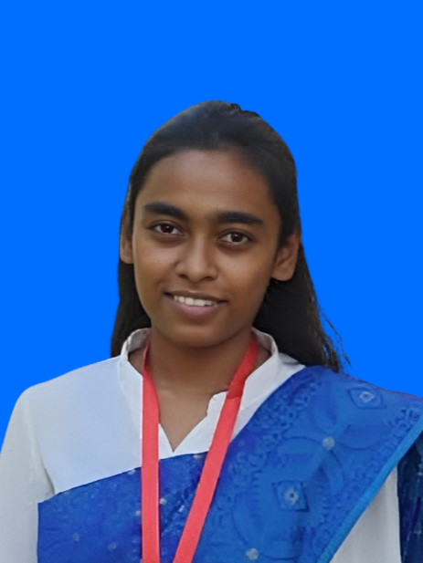

FATEMA TUZ ZOHORA
herpowerisp04@gmail.com
01234567890
Dhaka, Bangladesh.

Summary
Looking for a challenging growth oriented position for professional experience & willing to work in an environment where there is an opportunity of self-assessment and self-improvement in both individual and team based work that will help for further improvement.
Work Experience
Field Supervisor (Contractual) | E.gen Consultants Ltd.
Baseline survey of Climate vulnerability & Socio–economic state of south region part of Bangladesh project by Bangladesh Water Development Board
- Conducted household survey
- Maintained quality of the survey
- Monitored the enumerator’s work and their safety
- Worked on strict deadline based work
- Successfully achieved goals & worked in various places of Gopalganj, Barishal, Madaripur
- Enumerator (Contractual) |E.gen Consultants Ltd. End line Survey WASH project by Water.org
- Conducted household data collection
- Searched respondent’s house in rural villages by given location in datasheet
- Achieved daily target
- Worked in rural part of Rajshahi, Cumilla, Mymensigh, Jaypurhat, Dinajpur, Tangail, Narayanganj.
- Team work
Skill Highlight
- Microsoft Office: MS Word, MS Excel, Net browsing
- Multitasking and prioritization
- Data sorting, data organization
- Communicate with local people of Bangladesh with their local language
- Dedicated to work in tight schedule
- Excellent organizing skill
- Strong self-motivational skill
- Can travel and work anywhere in Bangladesh both individual & with team
Educational Qualification
| EXAM |
INSTITUTION |
PASSING YEAR |
GROUP |
RESULT(GPA) |
| BSS |
Bangladesh Open University |
Running |
Social Science |
0.00 |
| HSC |
Bangladesh Open School |
2022 |
Humanities |
4.32 |
| SSC |
Doctor Mohammad Shahidullah School & College |
2016 |
Science |
3.94 |
Trainings
- 3 months Basic Computer Office Application training from Woman Agriculture Training Center Zirabo, Savar, Dhaka,
- 1 month Communicative Language English training from Shekh Hasina National Institute of Youth Development Savar, Dhaka